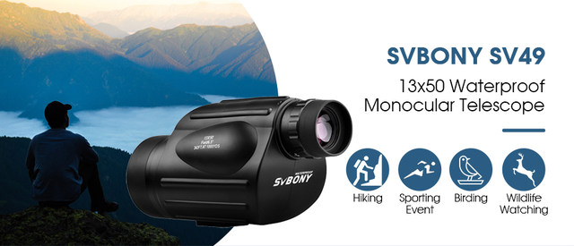
Features:
1.13X50 Magnification: See things 13X closer and Get Clearer and Brighter range of view with 50mm lens - The most powerful hand held monocular available in the market today, that also provides the most pleasant and clear view.
2.Not only can you see objects 13 times closer with this monocular, with 50mm objective lens you can even calculate the distance between you and the target and the size of your target.
3.Durable External Armor: Provides a secure, non-slip grip, and durable external protection.
4.Waterproof and Fogproof: Prevents moisture, dust, and debris from getting inside the monocular - designed to inhibit internal fogging. For any weather and any environment.
5.1/4 Inch universal tripod interface: The greater the magnification the more shake you get. This is easily compensated for by bracing against the tripod, only using a universal tripod with standard international 1/4 tripod Interface (no included).
6.Single Hand Focus: Ergonomic design helps you focus on your target quickly and accurately with one hand.
7.The brightest and clearest view of any monocular on the market today. Allows you to get the best view possible for bird watching, watching wildlife or scenery.
8. the monocular telescope only weigh 425g, it is compact and easy to use by one-hand, convenient to carry for everywhere.
NEW PHONE ADAPTER
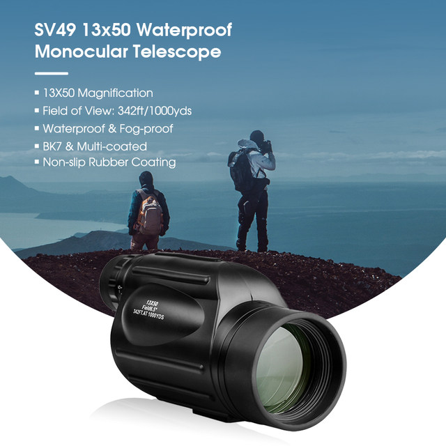
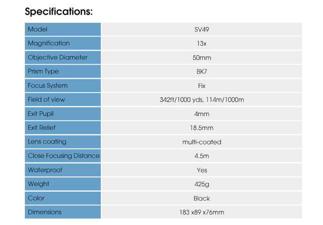
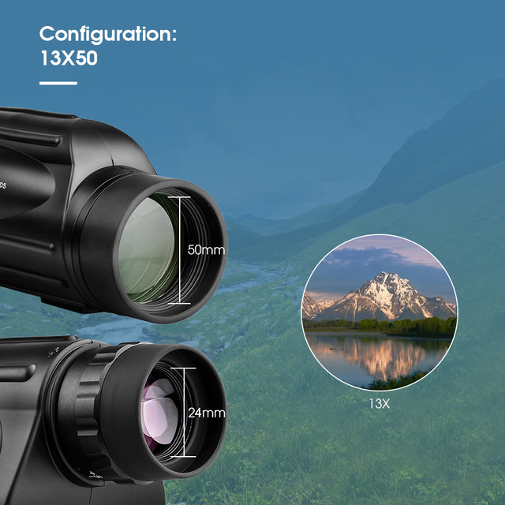
13X50 Configuration: See things 13X closer and get clearer (ideal state) and Brighter range of view with 50mm lens - The most powerful hand held monocular available in the market today, and also provides the most pleasant and clear view.
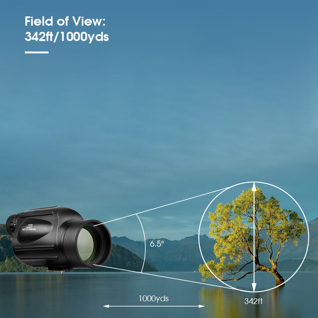
Field of View: 342ft/1000yds means when viewing objects at 1000 yards, you could see an area 342 feet wide. The angle of field of vision is 6.5 degree, ensures comfortable and long eye relief, humanized observation experience.
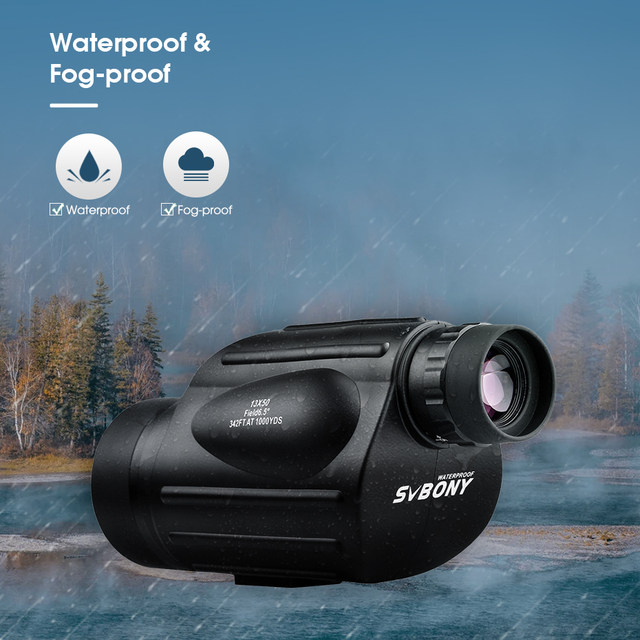
Injecting nitrogen into the telescope's sealed barrel can effectively prevent moisture from entering, waterproof and anti-fog, and can be used normally even in very harsh environments, greatly improving the service life.
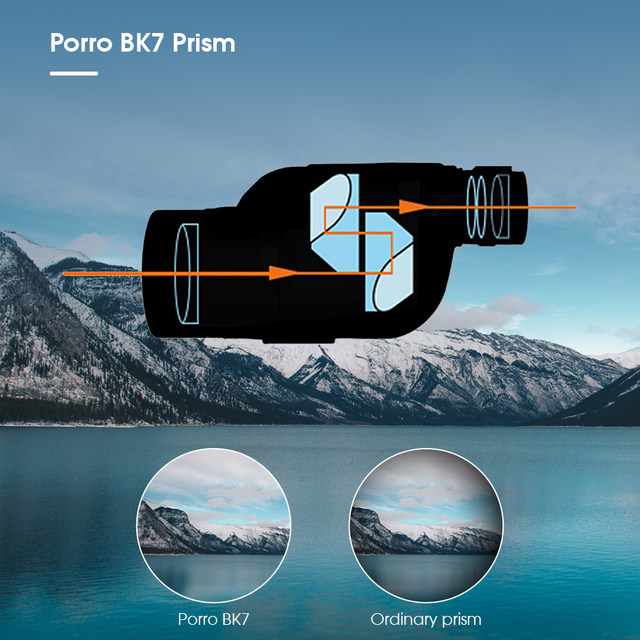
Porro BK7 prism gives you a much clearer 3D image than others and sets along with a much larger field of vision. Porro prism works better for whenever you’re needing that extra clear image or wider FOV. So this monocular is great for birding, hunting, sporting events, and general outdoor use.
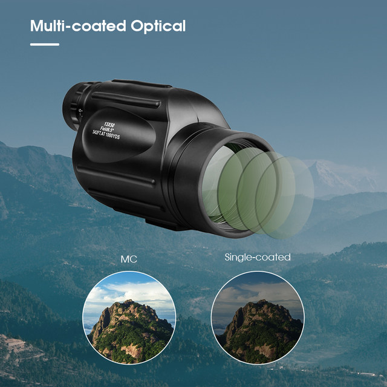
And multi-coated objective lens has greater advantages that single-coated lens in increasing the light transmission, delivers bright, clear and crisp images .
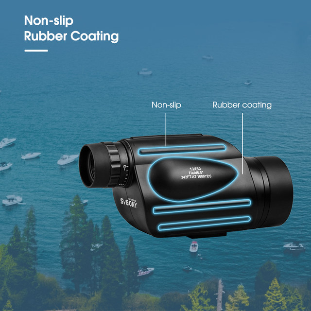
Non-slip Rubber Coating - Provides a secure, non-slip grip, and durable external protection.
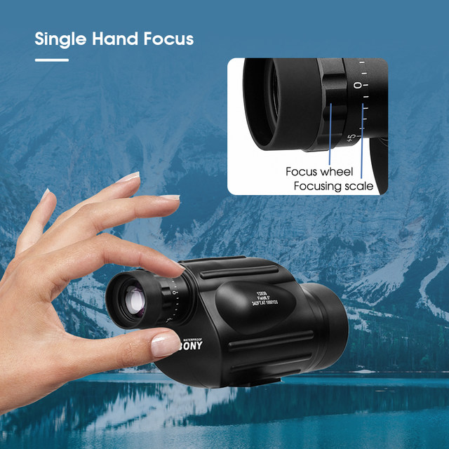
Single Hand Focus - Ergonomic design helps you focus on your target quickly and accurately with one hand.
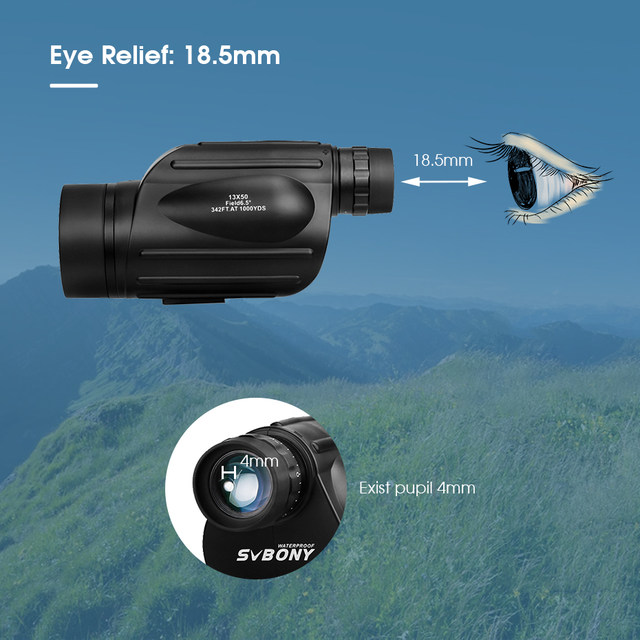
SV49 offers a long eye relief: 18.5mm, and fold-down eyecup which is comfortable for viewing with glasses or without glasses. And 4mm exist pupil is big enough for daytime viewing and causes less eyestrain.
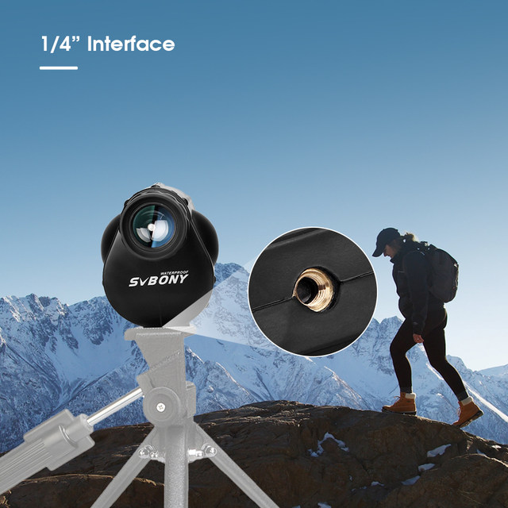
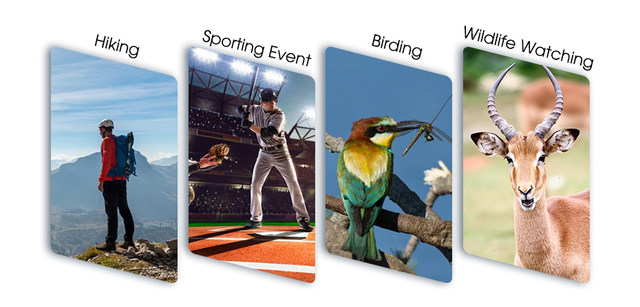
Buyers show
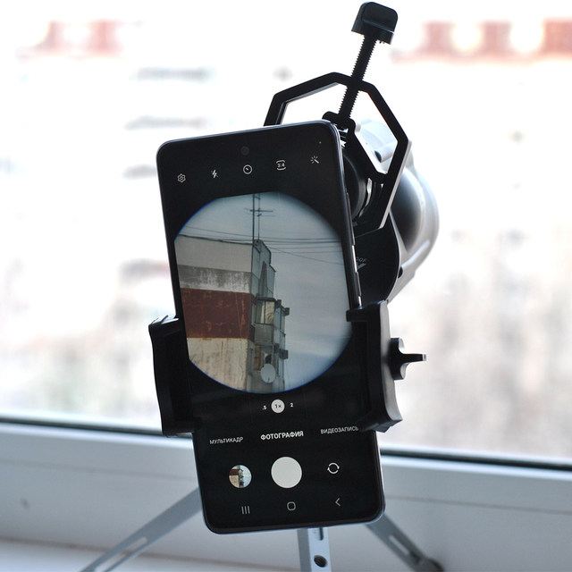
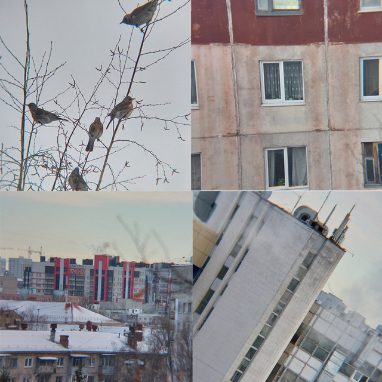
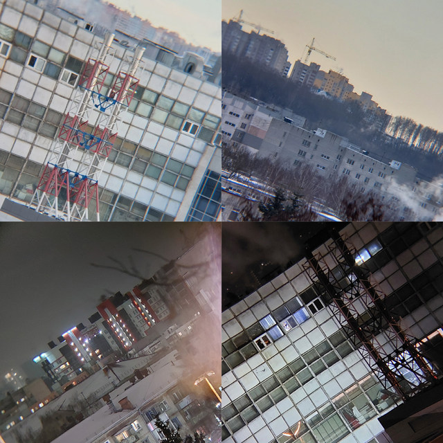
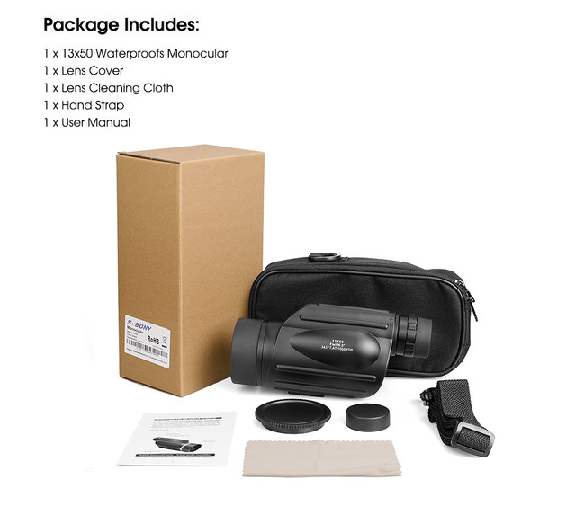
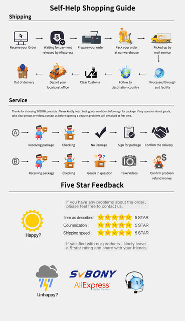